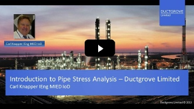

Comprehensive assessment of piping systems subject to pressure, temperature, and mechanical loading. Our pipe stress analysis services include:
We ensure piping systems meet regulatory requirements whilst optimising support design to reduce capital and operational costs.

Independent verification and design of pressure equipment and vessels. Our services include:
We provide rigorous, independent technical review to support safe operation and regulatory compliance.
Complete pipeline engineering solutions including design, analysis, and assessment. We provide:
Our engineering support ensures complex piping systems are safe, compliant, and practical to build and operate.

Engineering assessment and support for extending the operational life of industrial plants. We help you:
We provide independent technical review to maximise asset life whilst ensuring continued safe operation.
Beyond our core services, we provide specialist consultant support across a wide range of engineering challenges:
We combine rigorous engineering analysis with practical, real-world experience to deliver solutions that work.
Contact us to discuss your project requirements and how we can help.
Request a Consultation